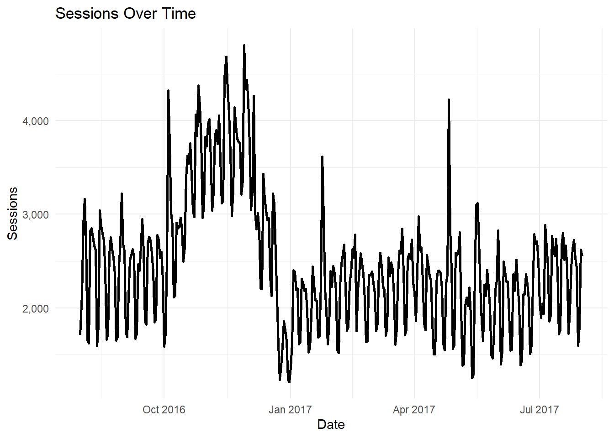
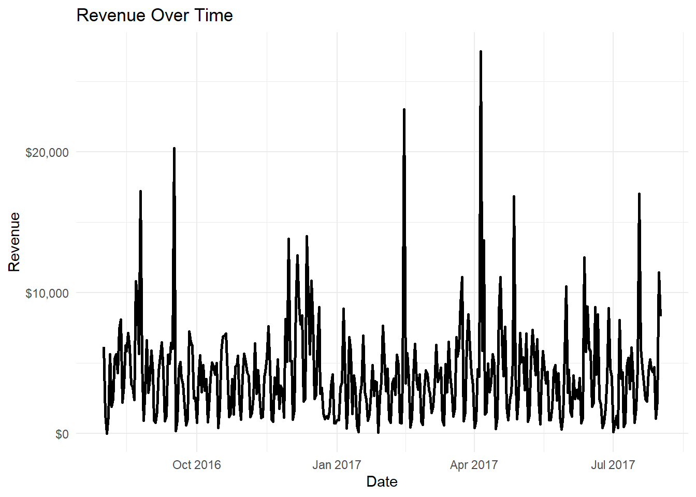
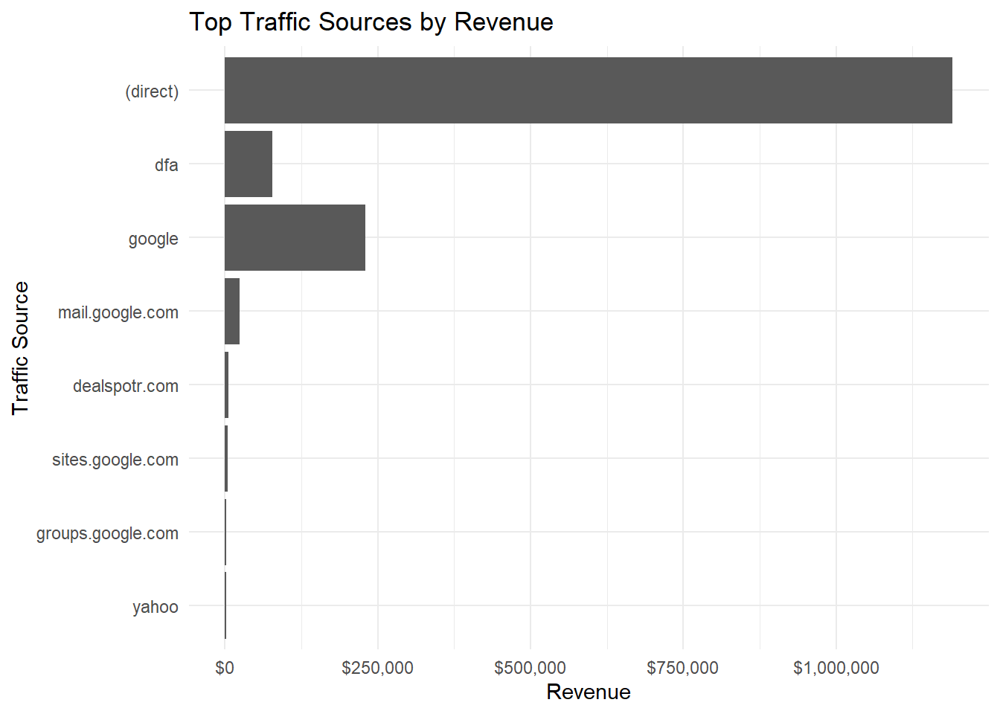
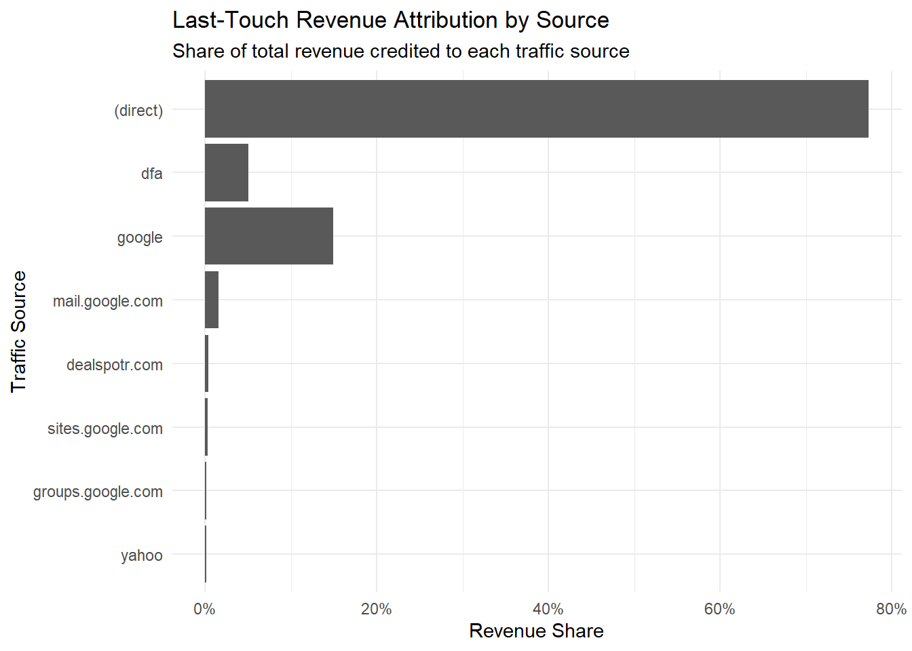
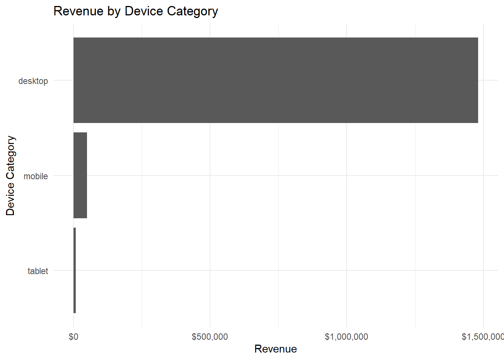

library(bigrquery)
library(dplyr)
library(ggplot2)
library(scales)
library(DT)
project_id <- "ga4-analysis-491223"Final Client Analytics Report
Google Analytics Sample Ecommerce Performance
Executive Summary
This report analyzes ecommerce website performance using the Google Analytics Sample dataset in BigQuery. The goal is to identify which acquisition sources, devices, and markets drive the strongest traffic, revenue, and conversion outcomes.
Key findings:
- The site generated strong overall traffic, but conversion efficiency varied by source and device.
- Revenue was concentrated among a small number of traffic sources.
- Some sources drove high sessions but weaker conversion rates, suggesting lower traffic quality.
- Desktop users generated higher revenue than other device categories.
- Attribution results suggest that last-touch source performance may overstate channels that appear near the end of the customer journey.
Business Problem
The client needs to understand which traffic sources and audience segments are contributing most to ecommerce performance. The business question is:
Which acquisition sources should the client prioritize to improve revenue and conversion efficiency?
Data Source and Pipeline
The analysis uses the public BigQuery table:
bigquery-public-data.google_analytics_sample.ga_sessions_*project_id <- "ga4-analysis-491223"sql <- "
SELECT
PARSE_DATE('%Y%m%d', date) AS session_date,
trafficSource.source AS source,
trafficSource.medium AS medium,
device.deviceCategory AS device_category,
geoNetwork.country AS country,
COUNT(DISTINCT fullVisitorId) AS users,
COUNT(DISTINCT CONCAT(fullVisitorId, CAST(visitId AS STRING))) AS sessions,
SUM(IFNULL(totals.pageviews, 0)) AS pageviews,
SUM(IFNULL(totals.transactions, 0)) AS transactions,
SUM(IFNULL(totals.transactionRevenue, 0)) / 1000000 AS revenue
FROM `bigquery-public-data.google_analytics_sample.ga_sessions_*`
WHERE _TABLE_SUFFIX BETWEEN '20160801' AND '20170801'
GROUP BY
session_date,
source,
medium,
device_category,
country
"
ga_mart <- bq_project_query(project_id, sql) |>
bq_table_download()Descriptive Insights
daily <- ga_mart |>
group_by(session_date) |>
summarise(
users = sum(users, na.rm = TRUE),
sessions = sum(sessions, na.rm = TRUE),
pageviews = sum(pageviews, na.rm = TRUE),
transactions = sum(transactions, na.rm = TRUE),
revenue = sum(revenue, na.rm = TRUE),
.groups = "drop"
) |>
mutate(
conversion_rate = transactions / sessions,
revenue_per_session = revenue / sessions
)
total_users <- sum(daily$users, na.rm = TRUE)
total_sessions <- sum(daily$sessions, na.rm = TRUE)
total_transactions <- sum(daily$transactions, na.rm = TRUE)
total_revenue <- sum(daily$revenue, na.rm = TRUE)
overall_conversion_rate <- total_transactions / total_sessions
revenue_per_session <- total_revenue / total_sessionsKPI Summary
kpi_summary <- tibble(
metric = c(
"Users",
"Sessions",
"Transactions",
"Revenue",
"Conversion Rate",
"Revenue per Session"
),
value = c(
comma(total_users),
comma(total_sessions),
comma(total_transactions),
dollar(total_revenue),
percent(overall_conversion_rate, accuracy = 0.1),
dollar(revenue_per_session)
)
)
kpi_summary# A tibble: 6 × 2
metric value
<chr> <chr>
1 Users 844,923
2 Sessions 903,653
3 Transactions 12,115
4 Revenue $1,540,071
5 Conversion Rate 1.3%
6 Revenue per Session $1.70 Sessions Over Time
ggplot(daily, aes(x = session_date, y = sessions)) +
geom_line(linewidth = 1) +
scale_y_continuous(labels = comma) +
labs(
title = "Sessions Over Time",
x = "Date",
y = "Sessions"
) +
theme_minimal()
Revenue Over Time
ggplot(daily, aes(x = session_date, y = revenue)) +
geom_line(linewidth = 1) +
scale_y_continuous(labels = dollar) +
labs(
title = "Revenue Over Time",
x = "Date",
y = "Revenue"
) +
theme_minimal()
Source Performance
source_perf <- ga_mart |>
group_by(source, medium) |>
summarise(
users = sum(users, na.rm = TRUE),
sessions = sum(sessions, na.rm = TRUE),
transactions = sum(transactions, na.rm = TRUE),
revenue = sum(revenue, na.rm = TRUE),
.groups = "drop"
) |>
mutate(
conversion_rate = transactions / sessions,
revenue_per_session = revenue / sessions
) |>
arrange(desc(revenue))
source_perf |>
slice_head(n = 10)# A tibble: 10 × 8
source medium users sessions transactions revenue conversion_rate
<chr> <chr> <int> <int> <int> <dbl> <dbl>
1 (direct) (none) 338861 371467 9160 1.19e6 0.0247
2 google organ… 212225 227668 2174 2.02e5 0.00955
3 dfa cpm 4935 5686 132 7.69e4 0.0232
4 google cpc 11594 13078 248 2.52e4 0.0190
5 mail.google.com refer… 1226 1457 70 2.33e4 0.0480
6 dealspotr.com refer… 398 528 40 5.69e3 0.0758
7 sites.google.com refer… 2737 2983 43 4.39e3 0.0144
8 groups.google.com refer… 951 1025 38 1.63e3 0.0371
9 yahoo organ… 1385 1478 22 1.37e3 0.0149
10 google cpm 432 496 18 1.34e3 0.0363
# ℹ 1 more variable: revenue_per_session <dbl>source_perf |>
slice_head(n = 10) |>
ggplot(aes(x = reorder(source, revenue), y = revenue)) +
geom_col() +
coord_flip() +
scale_y_continuous(labels = dollar) +
labs(
title = "Top Traffic Sources by Revenue",
x = "Traffic Source",
y = "Revenue"
) +
theme_minimal()
Advanced Analysis: Attribution
Because this dataset is session-level, this report uses last-touch session attribution. Each session is credited to the source and medium attached to that visit. This is appropriate for evaluating which sources directly preceded ecommerce outcomes, but it does not fully capture earlier awareness or assist channels.
attribution <- source_perf |>
mutate(
revenue_share = revenue / sum(revenue, na.rm = TRUE),
transaction_share = transactions / sum(transactions, na.rm = TRUE),
session_share = sessions / sum(sessions, na.rm = TRUE)
) |>
arrange(desc(revenue_share))
attribution |>
select(
source,
medium,
sessions,
transactions,
revenue,
session_share,
transaction_share,
revenue_share,
conversion_rate,
revenue_per_session
) |>
slice_head(n = 10)# A tibble: 10 × 10
source medium sessions transactions revenue session_share transaction_share
<chr> <chr> <int> <int> <dbl> <dbl> <dbl>
1 (direct) (none) 371467 9160 1.19e6 0.411 0.756
2 google organ… 227668 2174 2.02e5 0.252 0.179
3 dfa cpm 5686 132 7.69e4 0.00629 0.0109
4 google cpc 13078 248 2.52e4 0.0145 0.0205
5 mail.go… refer… 1457 70 2.33e4 0.00161 0.00578
6 dealspo… refer… 528 40 5.69e3 0.000584 0.00330
7 sites.g… refer… 2983 43 4.39e3 0.00330 0.00355
8 groups.… refer… 1025 38 1.63e3 0.00113 0.00314
9 yahoo organ… 1478 22 1.37e3 0.00164 0.00182
10 google cpm 496 18 1.34e3 0.000549 0.00149
# ℹ 3 more variables: revenue_share <dbl>, conversion_rate <dbl>,
# revenue_per_session <dbl>attribution |>
slice_head(n = 10) |>
ggplot(aes(x = reorder(source, revenue_share), y = revenue_share)) +
geom_col() +
coord_flip() +
scale_y_continuous(labels = percent) +
labs(
title = "Last-Touch Revenue Attribution by Source",
subtitle = "Share of total revenue credited to each traffic source",
x = "Traffic Source",
y = "Revenue Share"
) +
theme_minimal()
Device Analysis
device_perf <- ga_mart |>
group_by(device_category) |>
summarise(
sessions = sum(sessions, na.rm = TRUE),
transactions = sum(transactions, na.rm = TRUE),
revenue = sum(revenue, na.rm = TRUE),
.groups = "drop"
) |>
mutate(
conversion_rate = transactions / sessions,
revenue_per_session = revenue / sessions
) |>
arrange(desc(revenue))
device_perf# A tibble: 3 × 6
device_category sessions transactions revenue conversion_rate
<chr> <int> <int> <dbl> <dbl>
1 desktop 664479 11071 1480864. 0.0167
2 mobile 208725 866 49786. 0.00415
3 tablet 30449 178 9421. 0.00585
# ℹ 1 more variable: revenue_per_session <dbl>ggplot(device_perf, aes(x = reorder(device_category, revenue), y = revenue)) +
geom_col() +
coord_flip() +
scale_y_continuous(labels = dollar) +
labs(
title = "Revenue by Device Category",
x = "Device Category",
y = "Revenue"
) +
theme_minimal()
Recommendations
Prioritize high-revenue, high-conversion sources.
Sources that produce both revenue and strong conversion rates should receive priority in campaign planning.Investigate high-traffic, low-conversion sources.
Sources with many sessions but weak conversion rates may need landing page improvements, better audience targeting, or clearer product messaging.Use revenue per session as a traffic quality metric.
Session volume alone can be misleading. Revenue per session better reflects the business value of traffic.Optimize device experiences based on revenue performance.
If desktop generates stronger revenue, mobile performance should be reviewed for checkout friction, page speed, or usability issues.
Limitations
This analysis uses the public Google Analytics sample dataset, not a live client account.
The attribution model is last-touch session attribution.
The report does not include paid media cost, so ROAS cannot be calculated.
Users may be counted across multiple source, device, or country groups.
Revenue is based only on ecommerce transaction fields available in the export.
The analysis does not prove causality; it identifies performance patterns.